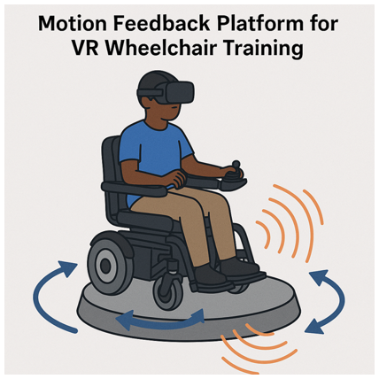
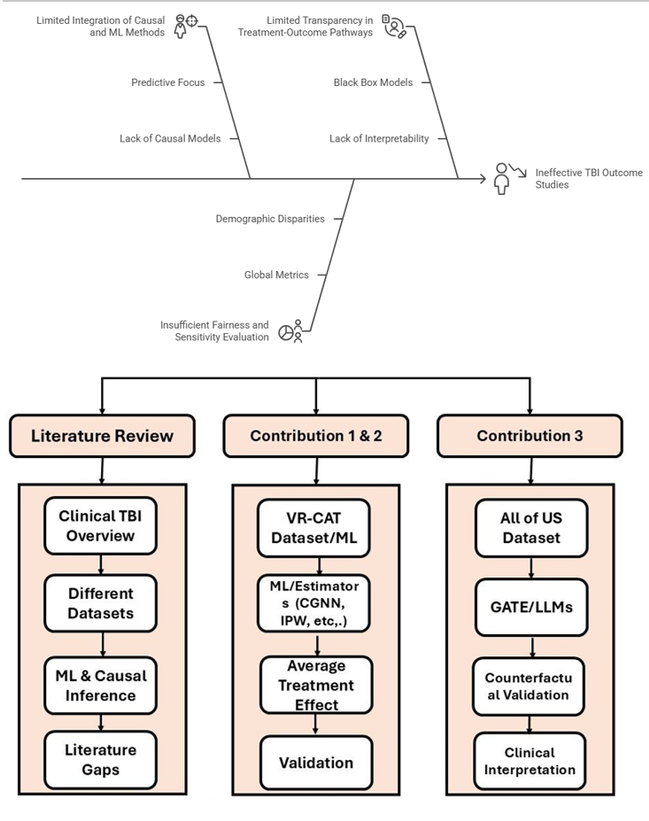

Power wheelchair users often face steep learning curves when navigating real-world environments, which can pose risks to safety and confidence. Virtual reality (VR) offers a promising avenue for low-risk training, by VR sickness—caused by a mismatch between visual and physical motion cues—can undermine its effectiveness. Incorporating motion and haptic feedback into VR simulation has been shown to reduce discomfort and increase immersion. This project lies at the intersection of rehabilitation engineering, human-computer interface, and robotics, and aims to improve independence and training outcomes for new wheelchair users.


Traumatic Brain Injury (TBI) affects about 69 million people each year. More than 5 million survivors live with long-term disabilities. It is a major cause of death and lasting impairment across all ages. Clinical decision-making in TBI remains difficult because of confounding, inconsistent recovery patterns, and limited predictive tools. This work evaluates pipelines for classification, causal effect estimation, and LLM-augmented inference. The contributions deliver a reproducible system for AI-facilitated clinical decision support in neurotrauma care.